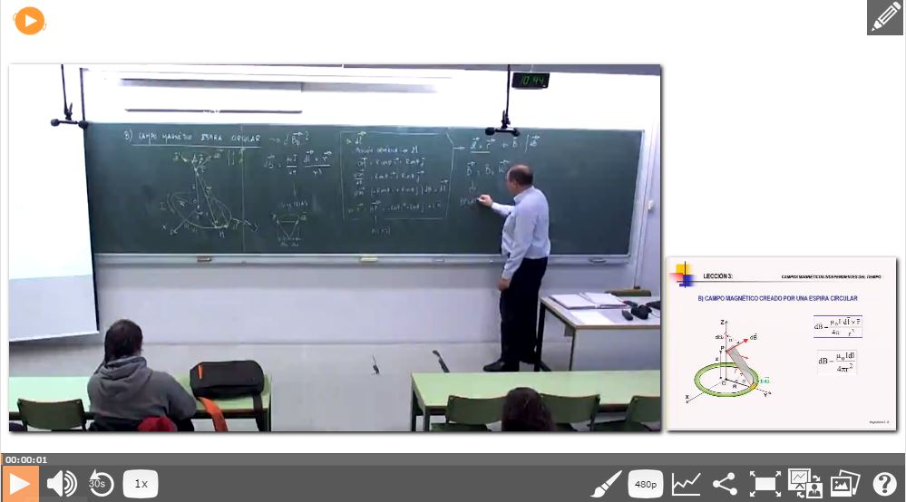
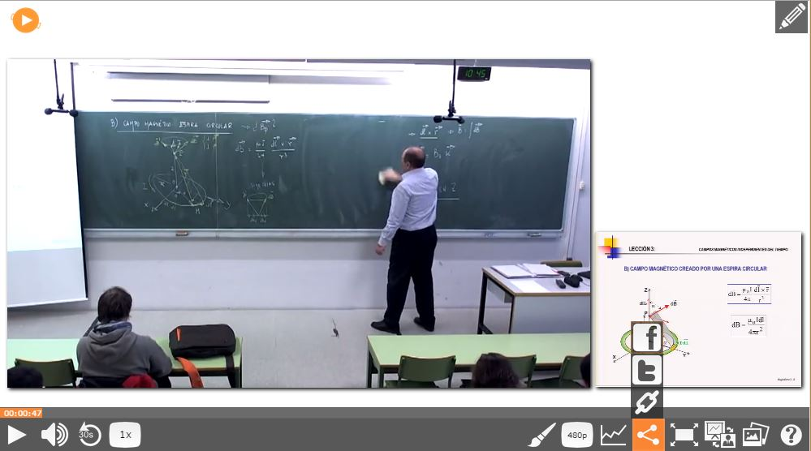

Guía de usuario de Paella Player
1 Interfaz Básica
Paella esta diseñado para mostrar dos canales de vídeo, la grabación y la vista de presentaciones, y cierta información relacionada con la conferencia. Usted puede navegar a través de las diapositivas y las pestañas y también puede comenzar a reproducir el vídeo pulsando play en la barra de controles o pulsando sobre el área del vídeo.

2 Play y Pausa
Botón para reproducir o pausar el vídeo. También funciona si hacemos clic sobre el área del vídeo.

3 Control Volumen
Usted puede controlar el volumen de reproducción a través de este control y su popup.

4 Repetición
Éste botón permite retroceder 30 segundos en la linea de tiempo.

5 Velocidad Reproducción
Usted puede controlar la velocidad de reproducción con este control.

6 Skin
Éste botón le permite configurar la configuración gráfica del reproductor.

7 Resolución
Si la fuente de vídeo posee varias resoluciones, este control le permite ajustar la calidad del vídeo.

8 Estadísticas
Éste plugin muestra una ventana sobre la linea de tiempo que muestra las partes del vídeo mas visualizadas.

9 Compartir
Comparte este vídeo en Facebook, Twitter o genera el código para integrarlo en la web.

10 Modo Pantalla Completa
Botón para intercambiar entre modo Pantalla Completa o modo ventana.

11 Composición
Usted puede utilizar este botón, que despliega una serie de opciones para configurar la disposición y tamaños de las fuentes de vídeo visualizadas.

12 Diapositivas
Usando este control, usted visualizará todas las diapositivas que se muestran en el vídeo y haciendo clic en ellas le permite saltar en la linea de tiempo al momento donde estas, se muestran.

13 Editor
Este botón le permite entrar en el modo editor.


14 Zoom
Algunos vídeos mostrarán, si tienen disponible, un icono para indicar que se puede hacer zoom.

Cuando usted active este control, pasara a modo zoom , se pausara el vídeo y visualizara una imagen de alta resolución que podrá hacer zoom utilizando la rueda del ratón ó los controles del panel de la izquierda y haciendo clic y arrastrando usted podrá desplazarse sobre la imagen. Haciendo clic sobre las flechas de los extremos saltará a la imagen siguiente o anterior y a su instante de tiempo correspondiente.